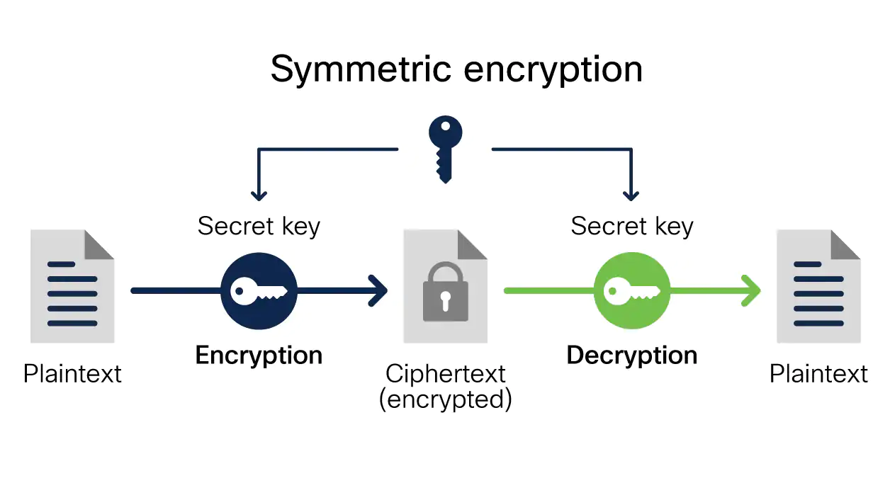
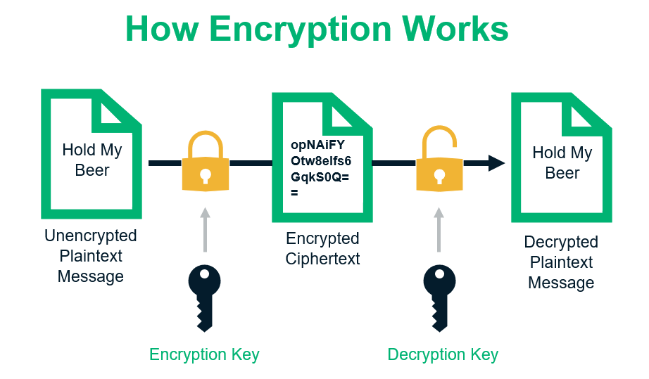

Encryption is an important way for individuals and companies to protect sensitive information from hacking. For example, websites that transmit credit card and bank account numbers should always encrypt this information to prevent identity theft and fraud. The mathematical study and application of encryption is known as cryptography.
Encryption is a means of securing data by encoding it mathematically such that it can only be read, or decrypted, by those with the correct key or cipher.
TDigital encryption processes translate data using an algorithm that makes the original information unreadable except for authorized users.
Encryption is crucial in a digitally-connected world to keep private information, messages, and financial transactions private and secure.
How Encryption Works?
Encryption strength depends on the length of the encryption security key. In the latter quarter of the 20th century, web developers used either 40-bit encryption, which is a key with 240 possible permutations, or 56-bit encryption. However, by the end of the century, hackers could break those keys through brute-force attacks. This led to a 128-bit system as the standard encryption length for web browsers.
The Advanced Encryption Standard (AES) is a protocol for data encryption created in 2001 by the U.S. National Institute of Standards and Technology. AES uses a 128-bit block size, and key lengths of 128, 192, and 256 bits.
AES uses a symmetric-key algorithm. This means that the same key is used for both encrypting and decrypting the data. Asymmetric-key algorithms use different keys for the encryption and decryption processes.
Today, 128-bit encryption is standard, but most banks, militaries, and governments use 256-bit encryption.

Example of Encryption
In May 2018, the Wall Street Journal reported that, despite the importance and accessibility of encryption, many corporations still fail to encrypt sensitive data. By some estimates, companies encrypted only one-third of all sensitive corporate data in 2016-leaving the remaining two thirds sensitive to theft or fraud.
Encryption makes it more difficult for a company to analyze its own data using either standard means or artificial intelligence. And being able to analyze data quickly can sometimes mean the difference between which of two competing companies gains a market advantage; this partly explains why companies resist encrypting data.
Consumers should understand that encryption does not always protect data from hacking. For example, in 2013, hackers attacked Target Corporation and managed to compromise the information of up to 40 million credit cards. According to Target, the credit card information was encrypted, but the hackers' sophistication still broke through the encryption. This hack was one of the largest breaches of its kind in U.S. history, and it led to an investigation by the U.S. Secret Service and the Justice Department.

General Methods of Encryption
Several general methods exist for encryption. The first is known as Symmetric Encryption Cryptography. It uses the same secret key to encrypt the raw message at source, transmit the encrypted message to the recipient, and then decrypt the message at the destination. A simple example is representing alphabets with numbers - say, 'A' is '01', 'B' is '02', and so on. A message like "HELLO" will be encrypted as "0805121215," and this value will be transmitted over the network to the recipient(s). Once received, the recipient will decrypt it using the same reverse methodology - '08' is 'H', '05' is 'E', and so on, to get the original message value "HELLO." Even if unauthorized parties receive the encrypted message "0805121215," it will be of no value to them unless they know the encryption methodology. The above is one of the simplest examples of symmetric encryption, but many complex variations exist for enhanced security. This method offers advantages of simple implementation with minimum operational overhead, but suffers from issues of security of shared key and problems of scalability.
The second method is called Asymmetric Encryption Cryptography, which uses two different keys - one public and one private - to encrypt and decrypt data. The public key can be disseminated openly, like the address of the fund receiver, while the private key is known only to the owner. In this method, a person can encrypt a message using the receiver's public key, but it can be decrypted only by the receiver's private key. This method helps achieve the two important functions of authentication and encryption for cryptocurrency transactions. The former is achieved as the public key verifies the paired private key for the genuine sender of the message, while the latter is accomplished as only the paired private key holder can successfully decrypt the encrypted message.
A third cryptography method is Hashing, which is used to efficiently verify the integrity of data of transactions on a network or to verify the fidelity of data that has been copied or downloaded against the original. Typical hash functions take inputs of variable lengths to return outputs of a fixed length. Fidelity can be verified by running the data in question through the same hash function and verifying it is identical to the original hashed data. Hashing works because it is very difficult to reconstitute the original data only given the hashed output. Hashing is also employed because it is computationally difficult, making block mining possible for cryptocurrencies. Additionally, Digital Signatures complement these various cryptography processes, by allowing genuine participants to prove their identities to the network.
